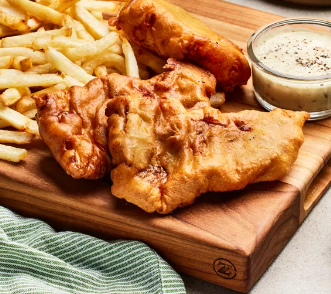

Home
Fish And Chips Recipe

image credit to allrecipes.com
Description:
Simple fish and chips made with cod fillets and twice-fried fries. Tastes great as-is or with malt vinegar, lemon, or tartar sauce.
Ingredients:
- Potatoes - 4 large potatoes, peeled and cut into strips
- Flour - 1 cup all-purpose flour
- Baking powder - 1 teaspoon
- Salt - 1 teaspoon
- Ground black pepper - 1 teaspoon
- Milk - 1 cup
- Egg
- Vegetable oil - 1 quart
- Cod fillets - 1.5 pounds
Steps:
- Place sliced potatoes in a medium bowl and cover with cold water.
- Mix flour, baking powder, salt, and pepper together in a separate medium bowl.
- Add milk and egg; stir until batter is smooth. Let stand for 20 minutes.
- Meanwhile, heat oil in a large pot or electric skillet to 350 degrees F (175 degrees C).
- Drain and pat dry potatoes. Fry in hot oil until tender, about 5 minutes; drain on paper towels.
- Dredge cod in batter, one piece at a time, and place in hot oil.
- Fry fish in batches until golden brown on all sides; drain on paper towels. Monitor oil temperature, increasing the heat as needed to maintain 350 degrees F (175 degrees C).
- Fry potatoes again in hot oil until crisp, 1 to 2 minutes; drain on paper towels.